Data integration & visualization
A robust integration layer connected the brand's operational systems and departments. Executives could see data from every source in a single view, with interactive charts that make complex data quick to read.
How I led the UX/UI of Wideview.io, an end-to-end operations and management platform that lets brand executives set targets, see where they stand, and turn insight into team action.
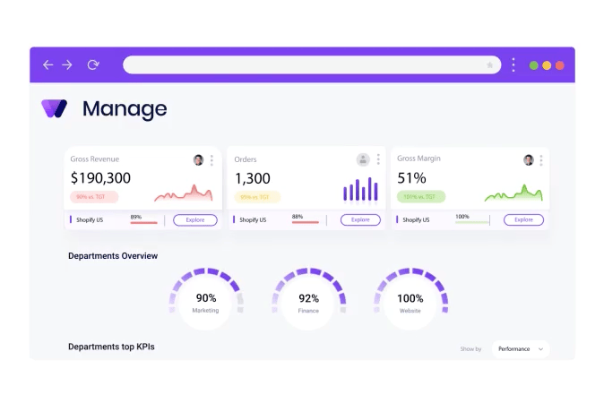
I'm a product designer with over 15 years of experience, working on everything from mobile apps to web applications. I care about intuitive, user-friendly design that makes people's lives easier.
My journey in UX began after college, at a digital agency. I became fascinated by the intersection of technology, human behavior and data, and knew this was the field I wanted to work in. I've been sharpening those skills through projects ever since, and Wideview is one I'm especially glad to share.
As the lead UX/UI product designer at Wideview.io, my mission was to create an end-to-end decision-making and management system for eCommerce brands, giving executives real value in running their operations.
The goal was to move traditional business intelligence (BI) from static dashboards to a dynamic system. Executives get macro-level insight into operations, plus micro-level task and team management, so that the goals and targets they set actually hold up in the daily life of an eCommerce brand.

eCommerce brand executives were juggling disjointed data from dozens of systems, platforms and company departments. That fragmentation slowed decisions down and made it hard to see the business as a whole. Handling the data, managing the team and executing took a lot of time and a lot of people.
As lead designer, one of my key challenges was an MVP that could consolidate those sources into one coherent data language, so executives could make informed decisions quickly and without the effort.
To solve this, we built a unified data intelligence platform. The MVP, designed under my lead, focused on five key elements.
A robust integration layer connected the brand's operational systems and departments. Executives could see data from every source in a single view, with interactive charts that make complex data quick to read.
An interface shaped around how eCommerce executives actually work. Simplicity came first, so they could move through the platform and reach the right insight with minimal effort. User testing and feedback loops fine-tuned it.
Built on a top / down / act method: start from a high-level overview, drill into a specific area, find the drivers behind performance, then prioritize issues and act on them before they grow.
A strategic planning tool and growth-opportunity finder. Executives define which metrics to measure and get data-driven suggestions for growth areas, resource optimization, goal setting and future planning.
Live performance tracking against targets. Executives assign action items to team members and follow progress toward key goals, keeping teams accountable and improving continuously.
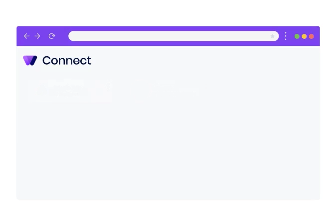
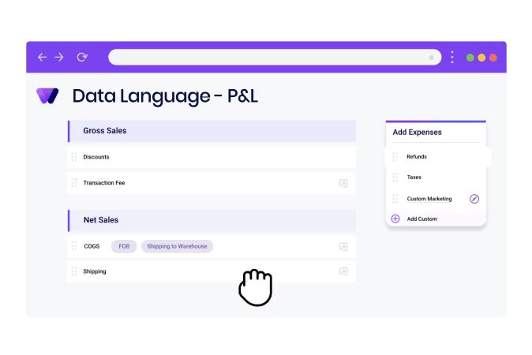
To keep the work user-centric, we ran extensive research into the pain points and needs of eCommerce brand executives. Through interviews, surveys and usability testing we identified two primary audiences.
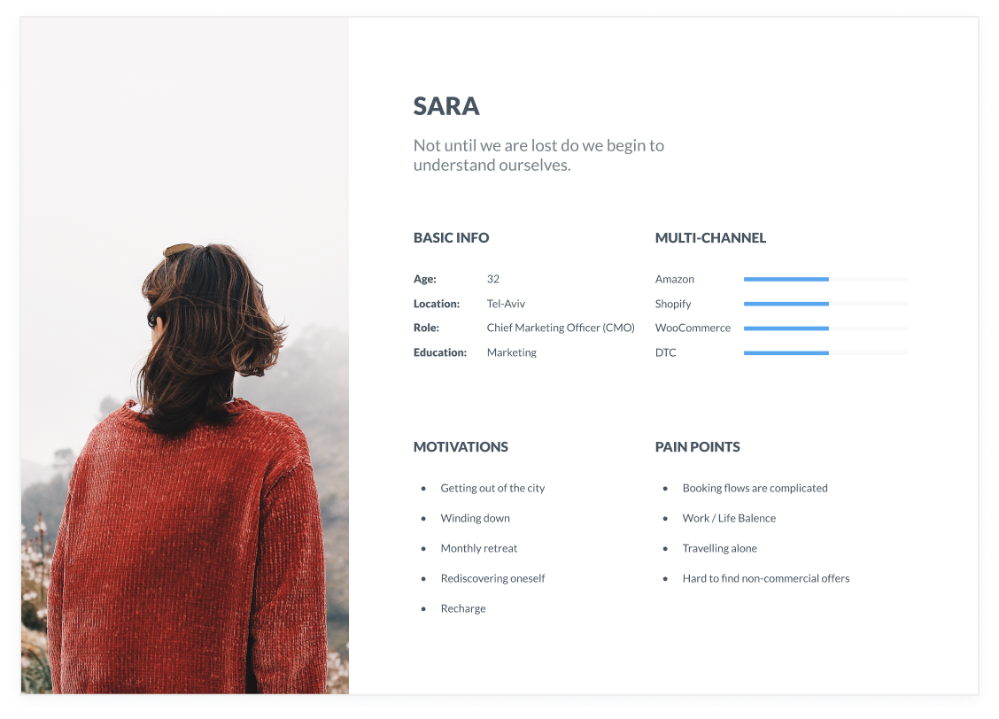
During ideation I ran user interviews to build the personas and inform the design. With the team, we prepared a script of 32 open-ended questions about our audiences' values, motivations and daily routines. We came back to the interview findings throughout the entire design process.
The journey map traces how an executive moves from connecting data, to understanding the business, to assigning and following up on action.
I started with low-fidelity sketches and wireframes to speed up decisions through visualization. The sketches drew on the first user interviews, the business goal and a heuristic evaluation, and all of them pointed to the same thing: there were too many distractions in the flow. We kept coming back to them to stay focused on our primary goals.
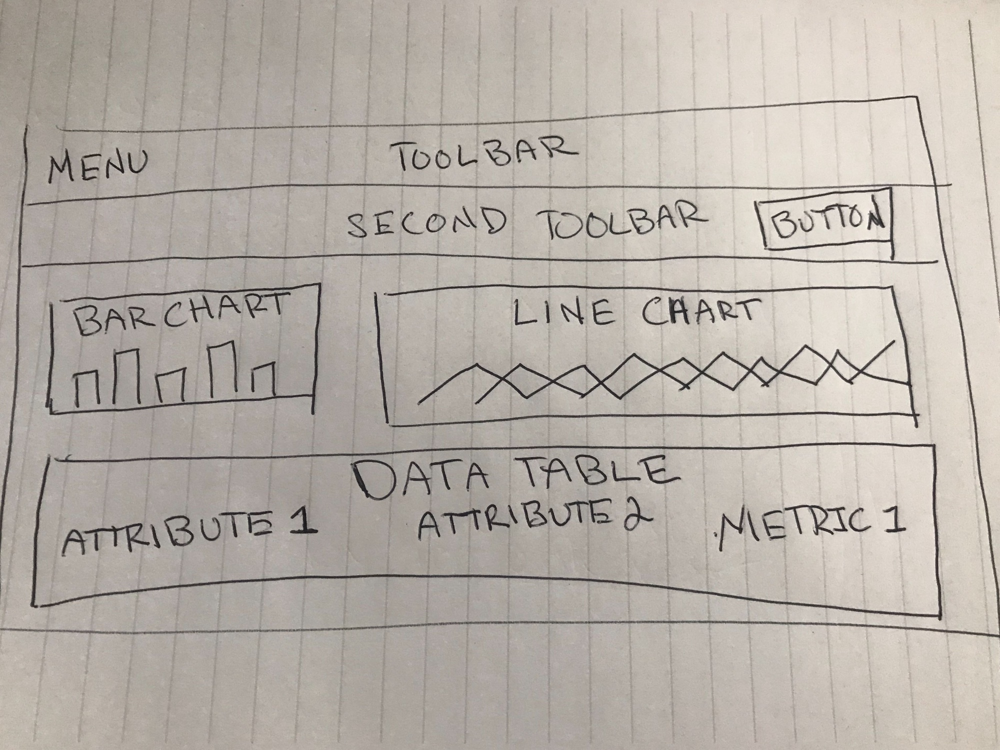
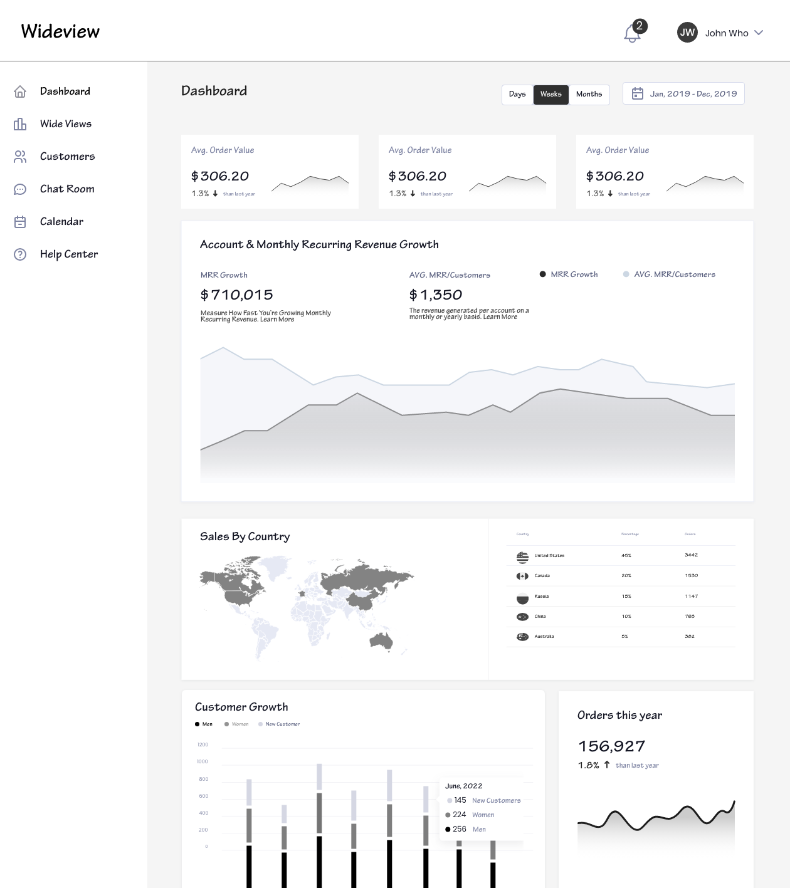
In Figma, I turned the sketches into low-fidelity wireframes, then refined them with relevant stock images and copy from the marketing team. At that point they were defined enough for user testing. After 4 tests I made a few changes and moved on to high-fidelity prototypes.
KPI cards with target chips, department health gauges, financial tables and timelines all share one component library, so every new screen speaks the same visual language.
We needed a Gantt component that could live in many places across the platform. It sits under every over-time graph, lining up events, alerts and team efforts with the data, so planning and context are read together.
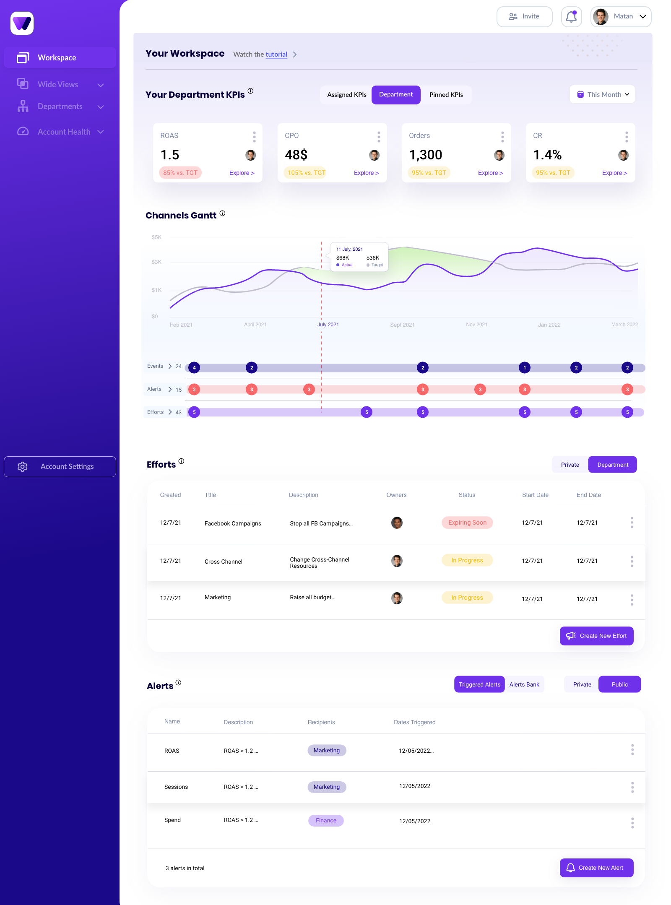
With the usability issues resolved, I designed the final screens in Figma. The goal was a visual identity aligned with the brand's values and message. I also reviewed the competition and dug into my own catalog of references for inspiration. Scroll inside each screen to see it in full.
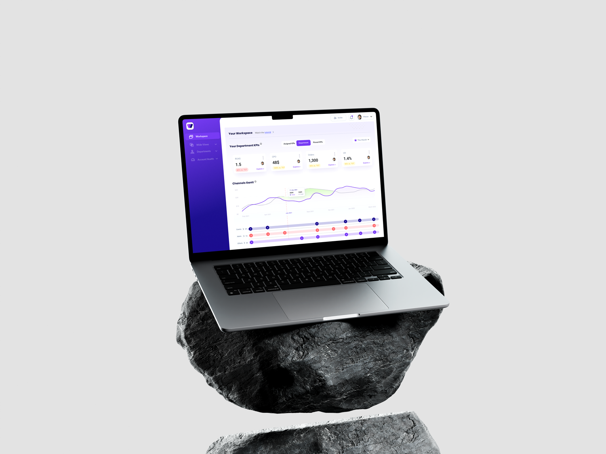
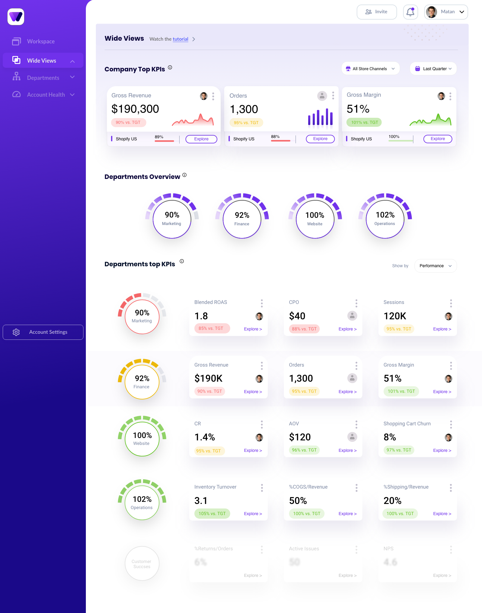
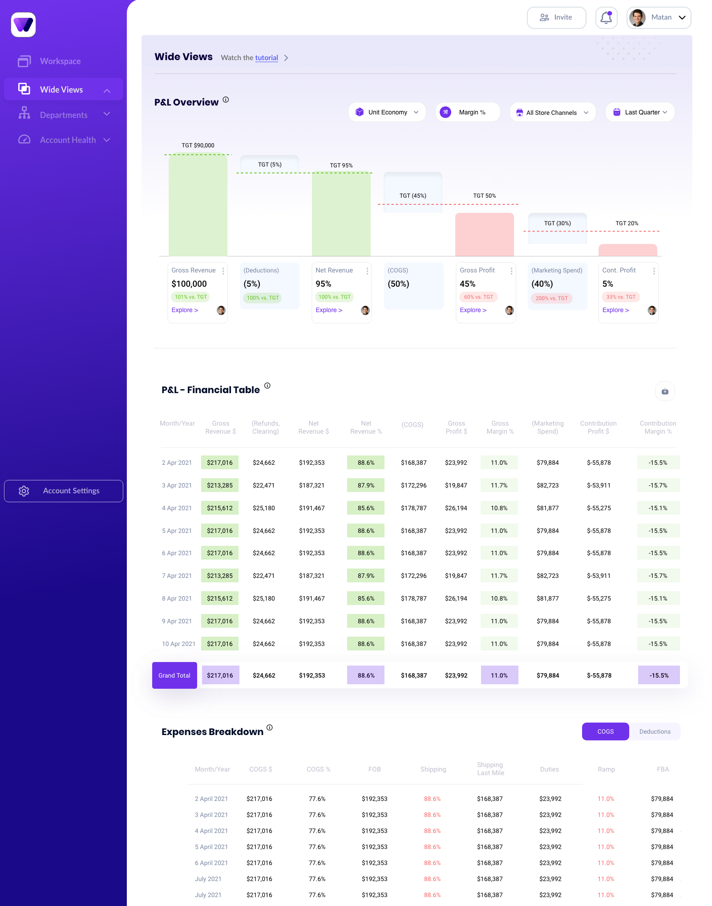
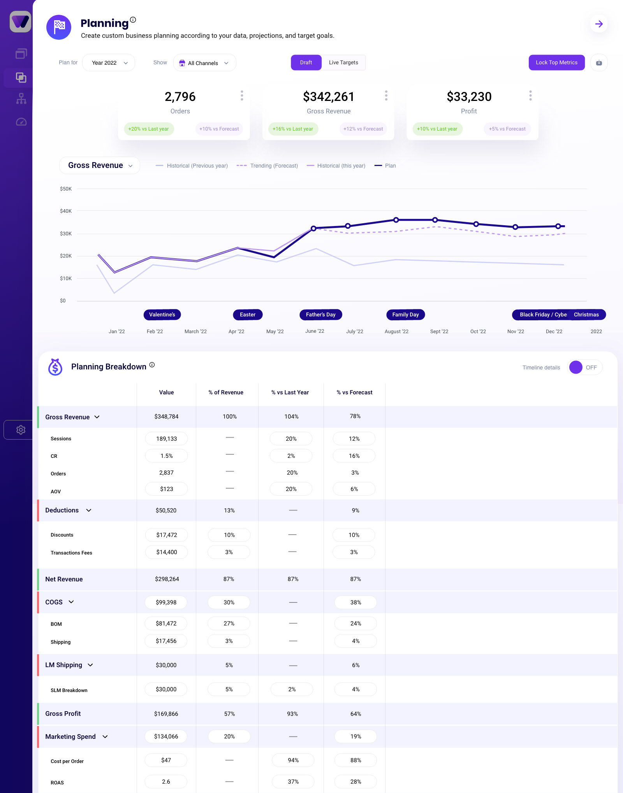
A fascinating product and industry, and a project that taught me a lot.
I crafted the brand identity, the product and the website, including all the marketing materials. I worked with every stakeholder and team, ran user interviews, and presented ideas to the CEO and other directors. Within the usual technical constraints, I had complete creative freedom.
Along the way I mastered Figma (and still use it every day), refined my design and research process, and built the soft skills to carry a message across the group and bring my voice to the decision-making table.
Thanks for reading.
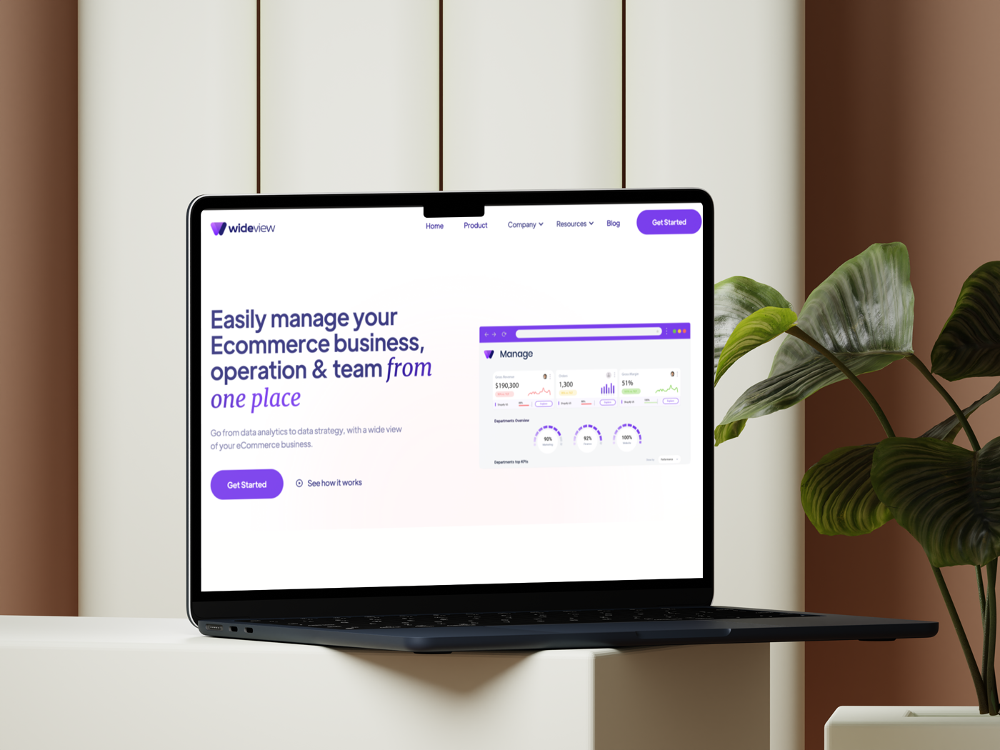